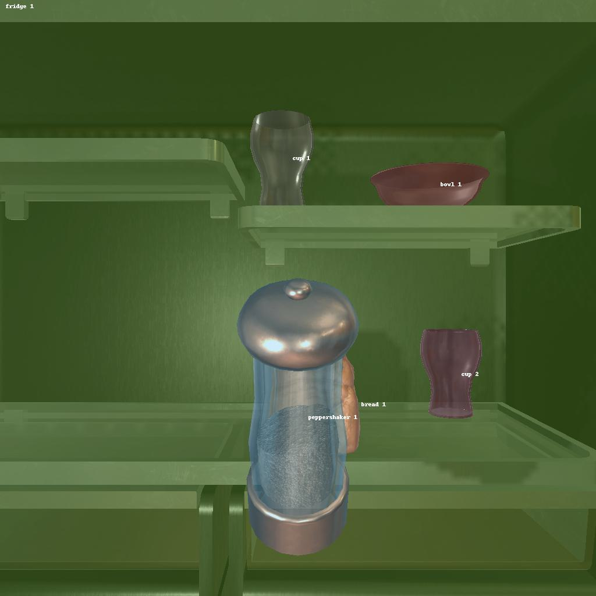

---------------------------------------------------------task: 20---------------------------------------------------------
--------------------------------------------------------------------------------------------------------------------------------------------------------------------
--------------------------------------------------------------------------------------------------------------------------------------------------------------------
Step:--------------------------------------------------------------------------8-------------------------------------------------------------------------------
----------------------------------------
VLM Prompt:
Image1:
Image2:
Image3:
**Instruction**
1. Analyze the provided image to identify all visible household objects, focusing on those relevant to the task description "put a hot apple in garbagecan."
2. Use the analysis of the image and the task hint "The agent must find an object of the desired type, pick it up, go to a microwave, heat the object with the microwave, then find the correct location to place it, and put it down there. The agent does not need to use the microwave button or open the microwave to heat the object, and the agent just needs to do action that is "heat the object with the microwave"." to answer the question: what is the most reasonable action in the choices for the task description "put a hot apple in garbagecan"?
4. Decide and write the answer using the template: The answer is: (i): , where i is the real number. If there is no desired object in the image, search every place based on **Initial Observation** to find the object. And if no one is exactly correct, choose a similar answer.
**Initial Observation**
You are in the middle of a room. Looking quickly around you, you can see cabinet (1-18), countertop (1-4), sink (1), drawer (1-7), sinkbasin (1), coffeemachine (1), microwave (1), garbagecan (1), stoveburner (1-4), toaster (1), fridge (1)
**Answer Choices**
(1): go to cabinet 1
(2): go to cabinet 2
(3): go to countertop 1
(4): go to cabinet 3
(5): go to cabinet 4
(6): go to cabinet 5
(7): go to sink 1
(8): go to cabinet 6
(9): go to drawer 1
(10): go to drawer 2
(11): go to sinkbasin 1
(12): go to cabinet 7
(13): go to cabinet 8
(14): go to coffeemachine 1
(15): go to microwave 1
(16): go to cabinet 9
(17): go to countertop 2
(18): go to cabinet 10
(19): go to drawer 3
(20): go to drawer 4
(21): go to garbagecan 1
(22): go to drawer 5
(23): go to cabinet 11
(24): go to cabinet 12
(25): go to cabinet 13
(26): go to cabinet 14
(27): go to stoveburner 1
(28): go to countertop 3
(29): go to stoveburner 2
(30): go to stoveburner 3
(31): go to stoveburner 4
(32): go to drawer 6
(33): go to cabinet 15
(34): go to cabinet 16
(35): go to cabinet 17
(36): go to cabinet 18
(37): go to toaster 1
(38): go to drawer 7
(39): go to countertop 4
(40): close fridge 1
(41): put peppershaker 1 in/on fridge 1
(42): cool peppershaker 1 with fridge 1
(43): examine peppershaker 1
(44): examine fridge 1
**Answer**
Let's think step by step by following the instructions.
----------------------------------------
----------------------------------------
Original Response:
The task description is "put a hot apple in garbagecan." Therefore, the agent needs to first find an apple, heat it in the microwave, and then put it in the garbagecan. The analysis of the images provided does not show any apples, so the agent must search other places based on the initial observation to find the object.
Since the apple is not visible in the images, the agent should start by searching in locations where an apple might typically be found, such as the fridge or cabinets. However, the instructions state that the agent does not need to use the microwave button or open the microwave to heat the object, which implies that the agent may not need to physically interact with the location of the apple but rather perform the action of heating it with the microwave.
Given the available answer choices, the most reasonable action that aligns with the task description is to go to the location where the apple might be found, heat it with the microwave, and then proceed to the garbagecan to dispose of it.
The answer is: (15): go to microwave 1, as this is the only choice that directly involves the microwave, which is necessary to heat the apple according to the task hint. After heating the apple, the agent would then go to the garbagecan to complete the task. Since there is no option to search for the apple, the agent assumes it has the apple and proceeds to heat it as per the instructions.
----------------------------------------
----------------------------------------
>>> Refine Original VLM Response and Get Pure Action: go to microwave 1, as this is the only choice that directly involves the microwave, which is necessary to heat the apple according to the task hint
----------------------------------------
-----------------------------------------------------------------
Running time: 22.4417462348938 seconds
Total Money: 12.758260000000003
-----------------------------------------------------------------
-----------------------------------------------------------------
Text Observation:Nothing happens.
-----------------------------------------------------------------
UNSUCCEED